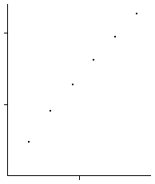

| 4(e) (i) On the left is the completed table, on the right is the graph. |
| r | N(r) | 1/r | Log(1/r) | Log(N(r)) |
| 1/2 | 3 | 2 |
0.301 | 0.477 |
| 1/4 | 8 | 4 |
0.602 | 0.903 |
| 1/8 | 19 | 8 |
0.909 | 1.279 |
| 1/16 | 42 | 16 |
1.204 | 1.623 |
| 1/32 | 89 | 32 |
1.505 | 1.949 |
| 1/64 | 184 | 64 |
1.806 | 2.265 |
|
 |
|
| The first two points do not appear to fall along the same line as the remaining four.
The slope of this line approximates the box-counting dimension. We measure
dim = (2.265 - 1.279)/(1.806 - 0.909) = 1.099. |
| (ii) Following the first hint, we look for patterns in the box counts. |
| 1/2n | N(2n) |
| 1/2 | 2 + 2 - 1 |
| 1/4 | 4 + 4 - 1 + (2 - 1) |
| 1/8 | 8 + 8 - 1 + (4 - 1) + (2 - 1) |
| 1/16 | 16 + 16 - 1 + (8 - 1) + (4 - 1) + (2 - 1) |
|
| In general, for boxes of side length 1/2n we have |
| N(2n) | = 2n + 2n - 1 + (2n-1 - 1) + (2n-2 - 1) + ... + (2 - 1) |
| = 2n + 2n + 2n-1 + 2n-2 + ... + 2 - n |
| = 2n + 2n + 2n-1 + 2n-2 + ... + 2 + 1 - (n + 1) |
| = 2n + 2n+1 - 1 - (n + 1) |
| = 2n+1 + 2n - (n + 2) |
|
| Then the box-counting dimension is the limit |
| db | = limn → ∞Log(2n+1 + 2n - (n + 2))/Log(2n) |
| = limn → ∞Log(2n+1(1 + 2-1 - (n + 2)/2n+1))/Log(2n) |
| = limn → ∞Log(2n+1)/Log(2n) +
limn → ∞Log(1 + 2-1 - (n + 2)/2n+1)/Log(2n) |
| = limn → ∞(n+1)/n +
limn → ∞Log(1 + 2-1 - (n + 2)/2n+1)/nLog(2) |
| = 1 |
|
| because the limit of the second term is 0: the numerator goes to Log(3/2) while the denominator gets large without bound. |
| (iii) The results of (i) and (ii) are close, but not identical because (i) was not calculated with boxes small enough to detect the
limiting value. |